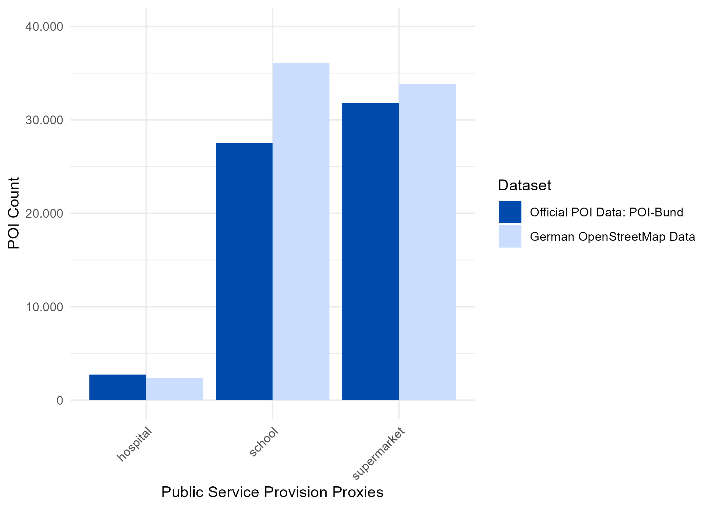
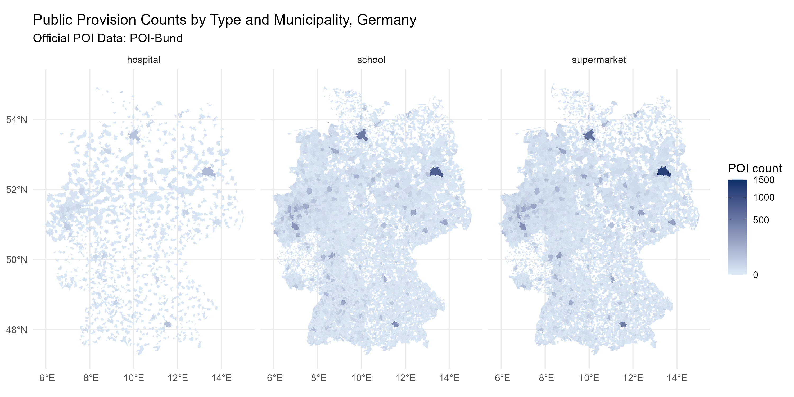
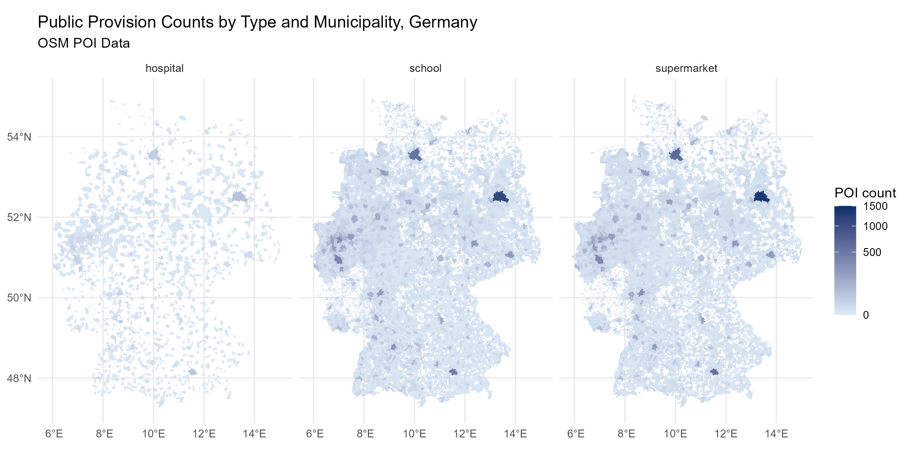
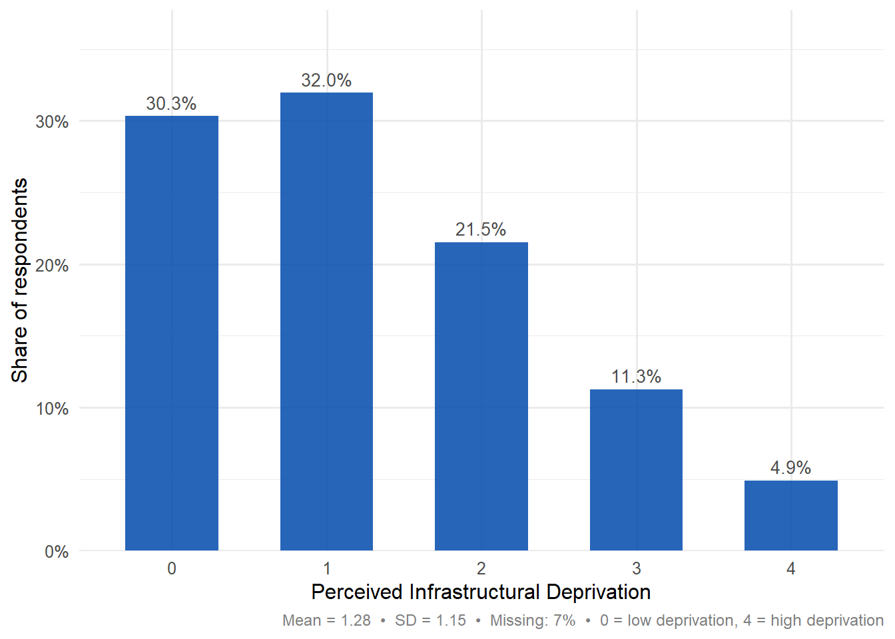
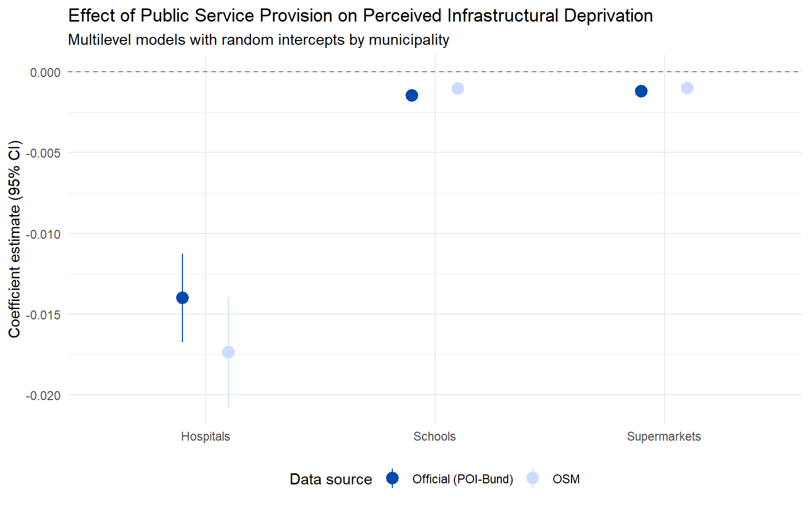

flowchart TB
A1[Obtain GLES Data] --> E
A2[Obtain OSM Data from Geofabrik] --> B2[Assign & Deduplicate by Municipality] --> D2[Compare POI Coverage]
A3[Obtain Official POI Data] --> B3[Assign to Municipality] --> D2
D2 --> E[Link OSM and Official POI Data by Municipality]
E --> F[Create Public Service Provision Proxies]
F --> G[Run Regression Analyses]
G --> H[Compare Results for OSM and Official POI Proxies]
osmBias
Bias in the Map, Bias in the Results? Validating OpenStreetMap Point of Interest Data for Individual-Level Survey-Based Analysis
At a glance
How do differences in point of interest (POI) data sources affect analytical results?
This tool offers a hands-on, step-by-step workflow to help users compare POI data from OpenStreetMap (OSM) with administrative POI and built environment datasets. The tutorial walks users through the following steps:
Part 1: Prepare the OSM POI data
Access OSM POI data, load it into the R environment, clean and standardize the OSM geometries, assign POIs to administrative geographic units, and deduplicate the data.
Part 2: Obtain official POI data
Load and prepare official built environment data as a benchmark for comparison.
Part 3: Compare public service provision coverage across data sources
Compare POI indicators from OSM and official data to identify differences in coverage at the national and municipality level.
Part 4: Link to survey data and assess impacts on analytical results
Link POI-based measures to survey responses, estimate parallel multilevel regression models using OSM-based and official POI indicators, and compare model results to evaluate how data source differences may influence substantive conclusions.
Table of Content
Introduction
The growing availability of big geodata allows survey researchers to enrich survey datasets with innovative geographic context measures. This development opens up new research opportunities and strengthens spatial perspectives within established theoretical frameworks. Against this backdrop, the use of crowdsourced geospatial data, such as OpenStreetMap (OSM), has increased substantially in survey-based social science research. However, linking OSM data to survey responses raises important questions about data quality and fitness for use, as the database relies on volunteer contributions and lacks standardized quality assurance procedures. At the same time, comparable official data sources are often unavailable, outdated, costly, or insufficiently detailed for many research applications. OSM thus emerges as a practical and cost-effective alternative. Nevertheless, systematic assessments of OSM data quality remain essential as variations in OSM coverage and accuracy may affect substantive research findings.
This tool fills this critical void and serves as an innovative hands-on primer on OSM data quality checks in survey-based analyses. Specifically, it focuses on assessing the completeness and coverage of OSM POI data when used to objectively proxy local public service provision in survey-based research.
As an illustrative example, we examine whether living in an under-resourced area from the perspective of public service provision is associated with stronger perceptions of infrastructural deprivation (for previous research, see Baybeck and McClurg (2005); Letki (2008); McKay (2019); Stroppe (2023); Theunissen (2024)).
Public Service Provision refers to the local availability of essential services and is operationalized as
the presence of hospitals, schools, and supermarkets within the respondents’ immediate residential environment.
Perceived infrastructural deprivation is measured using a single survey item from the German Longitudinal Election Study 2021, which captures respondents’ sense of infrastructural disadvantage:
“Society pays insufficient attention to ensuring access to basic infrastructure and services for people like me.”
To address this question, survey responses are linked with public service provision information about respondents’ residential environment, approximated by German municipalities. Augmenting survey data with objective measures of public service provision is fundamental to the research question, but it involves several complicated methodological decisions. These include (but are not limited to): (1) selecting the POI data source for proxies of public service provision and (2) evaluating its data quality. Here, data quality refers primarily to the completeness and coverage of POI data at the municipal level1. Objective measures of public service provision are drawn from two POI data sources: a German OSM subset and official built environment data from the German Federal Agency for Cartography and Geodesy, which serve as a benchmark for evaluating OSM data quality.
This tool walks users through a step-by-step workflow for preparing, comparing, and linking OSM and official POI data with survey data. It demonstrates how differences in POI data sources can affect empirical results and substantive conclusions. By centering on POI-based measures of public service provision, the tool offers a focused and transferable approach to assessing OSM data quality that can be adapted to other concepts and data quality metrics.
TipWhat to Expect
We suggest treating the tool as a pedagogical and didactical one. It is intended to help researchers become familiar with basic and lightweight OSM POI quality check procedures and to ascertain their fitness for use in a given research application.
Data Prerequisites
To run this tool or to apply to their own applications, researchers need the following data:
Georeferenced survey data with a geographic identifier (e.g., municipality, ZIP code, or grid cell ID) for each respondent’s place of residence.
Geographic unit geometries (e.g., shapefiles for municipalities, ZIP codes, or grid cells) used to link POI data with respondents’ places of residence.
A selected OSM POI data subset.
Official POI data, if available.
In compliance with the above, the tool is based on:
Georeferenced survey data from the German Longitudinal Election Study 2021 with the municipalities of residence
Shapefiles containing the geometries of German municipalities (2021)
Shapefiles of points-of-interest (POI) data from the German subset of OpenStreetMap, obtained from Geofabrik (2025)
Shapefiles of POI data from the Points of Interest Federal Dataset (POI-Bund) of the Federal Agency for Cartography and Geodesy (2022)
Data Restrictions
The code shown in this tool reflects the full workflow as it would run with the original survey, OSM, and POI-Bund data. However, not all data sources can be shared alongside this tool:
OSM data are not included due to the size of the shapefiles. Users who wish to replicate Parts 1-3 with their own OSM data can download the relevant shapefiles from Geofabrik as described below.
POI-Bund data are owned by the German Federal Agency for Cartography and Geodesy (BKG) and are only available to federal authorities and authorized users under the GeoBund data access regulation. Access is granted after the conclusion of a license agreement following a successful application and validation of the data request. Users who wish to access or validate POI-Bund data should contact the BKG directly.
GLES survey data with georeferenced municipality identifiers are restricted-use and cannot be shared publicly due to data protection requirements. For information on access to the sensitive data please consult the GESIS Secure Data Center.
As a result, the code in Parts 1-3 is displayed for illustration but executed silently using pre-saved outputs. All printed diagnostics, bar charts, and maps shown in these parts are based on the real data and were saved during a prior run with the original data sources.
From Part 4 onwards, the tool uses a fully synthetic dataset that can be executed live. This dataset preserves the distributional properties, correlation structure, and clustering of the original GLES data but does not contain any real respondent information or municipality codes. The synthetic POI counts were calibrated to approximate the distributions observed in the survey-linked data. For details on the data generation procedure, see the accompanying simulation script.
Overall Workflow
The overall workflow can be summarized as shown below.
Set-up
Getting started
Packages
Several R packages support geospatial data processing. We rely primarily on sp, a well-established geospatial package, and sf, a newer framework for managing spatial data. Several highly well-known packages (e.g., dplyr, ggplot2, rlang, tibble, and alike) are used for data wrangling, visualization, statistical analysis, and general code support.
# Load required packages
library(broom.mixed) # for data visualization
library(dplyr) # for data manipulation
library(ggplot2) # for data visualization
library(lme4) # for fitting linear and generalized linear mixed-effects models
library(nngeo) # for spatial manipulation based on k-nearest neighbor algorithm
library(purrr) # for functional programming helpers
library(sf) # for handling spatial (geometric) data, established package
library(stringr) # for handling string data
library(tibble) # for creating and managing tibbles (special types of data frames)
library(tidygeocoder) # for running geocoding tasks and handling geocoded data
library(tidyr) # for data reshaping
library(scales) # for axis label formattingRead in Geospatial Data on German Municipalities
To assign POI data to respondents’ places of residence, we need the geometries of German municipalities. We rely on the municipality boundaries provided by the German Federal Agency for Cartography and Geodesy (BKG), available through the Open Data portal ArcGIS Hub. When loading the municipality shapefile, we check for three potential sources of error, following the recommendations outlined in the AreaMatch tool: (1) a consistent coordinate reference system (CRS) across all spatial datasets, (2) timeliness of administrative boundaries and territorial reforms, and (3) the existence, column names, and format of identifiers and variables of interest.
german_municipalities <- sf::st_read("./data/municipalites_2021_epsg4326.shp", quiet = TRUE)# check coordinate reference system
sf::st_crs(german_municipalities) Coordinate Reference System:
User input: WGS 84
wkt:
GEOGCRS["WGS 84",
DATUM["World Geodetic System 1984",
ELLIPSOID["WGS 84",6378137,298.257223563,
LENGTHUNIT["metre",1]]],
PRIMEM["Greenwich",0,
ANGLEUNIT["degree",0.0174532925199433]],
CS[ellipsoidal,2],
AXIS["latitude",north,
ORDER[1],
ANGLEUNIT["degree",0.0174532925199433]],
AXIS["longitude",east,
ORDER[2],
ANGLEUNIT["degree",0.0174532925199433]],
ID["EPSG",4326]]# inspect attributes
head(german_municipalities) Simple feature collection with 6 features and 3 fields
Geometry type: MULTIPOLYGON
Dimension: XY
Bounding box: xmin: 9.017464 ymin: 53.76811 xmax: 10.96838 ymax: 54.82416
Geodetic CRS: WGS 84
mun_id pop_count area_km2 geometry
1 010010000000 91113 56.73 MULTIPOLYGON (((9.412664 54...
2 010020000000 246243 118.65 MULTIPOLYGON (((10.16916 54...
3 010030000000 216277 214.19 MULTIPOLYGON (((10.87684 53...
4 010040000000 79496 71.66 MULTIPOLYGON (((9.995446 54...
5 010510011011 12381 65.21 MULTIPOLYGON (((9.164391 53...
6 010510044044 21844 31.97 MULTIPOLYGON (((9.120632 54...Tool application
Part One: Getting Started with OSM POI Data
Obtain OSM POI data: A Geofabrik-based Approach
There are many ways to access OSM data. Users can request custom subsets through the Overpass API, use the osmdata R package, download OSM shapefile extracts from Geofabrik, or rely on web-based services, such as Protomaps, BBBike, or similar platforms. All of these sources draw from the global OSM database, but they differ in their level of detail, geographic coverage, and update frequency. For beginners, as well as for more experienced users who prefer working with spatial files, we recommend starting with the shapefiles provided by Geofabrik. Compared to other OSM data providers, Geofabrik offers clean, well-structured, and de-anonymized datasets that include geometries, place names, coordinates, built environment feature classes, and other key tags. The attribute set is streamlined and comprehensive, so the shapefiles are suited both for users new to OSM and for the needs of this tool.
NoteFYI
How to obtain shapefiles from Geobfabrik? For the sake of brevity, we omit a detailed discussion of how to obtain the shapefiles and instead refer users to the designated instructional script.
Read in OSM POI Data
Once all the shapefiles are obtained, we can read them into R. First, the files are unzipped and their file paths are specified so they can be accessed within the R environment. Because POI in OSM may be represented using different geometries, both point and polygon layers are read to ensure complete coverage of POI features. Point features are defined by longitude and latitude coordinates representing a single location (e.g., a school or hospital), while polygon features represent area extents defined by multiple coordinates forming closed shapes (e.g., hospital complexes or supermarket buildings). Reading both layers ensures that all relevant OSM POI representations are captured.
A complication arises from the fact that there is no single OSM shapefile for Germany. Instead, the shapefiles are organized by the German 16 federal states and (occasionally) administrative area/governmental unit (i.e., Regierungsbezirke2). Below, we extract OSM data for each federal state or administrative area by reading in their respective shapefiles.
Note that OSM features stored in the shapefiles are extracted into different layers depending on their type. For example, OSM features represented as areas, or polygons, will be written to the layer with an _a suffix (gis_osm_pois_a_free_1, see below), while features represented as points will be stored to the layer without an _a suffix (gis_osm_pois_free_1, see below).
## Read shapefiles from Geofabrik
files <- c(
arnsberg_regbez_poi = "arnsberg-regbez-latest-free.shp",
brandenburg_with_berlin_regbez_poi = "brandenburg_with_berlin-latest-free.shp",
detmold_regbez_poi = "detmold-regbez-latest-free.shp",
duesseldorf_regbez_poi = "duesseldorf-regbez-latest-free.shp",
freiburg_regbez_poi = "freiburg-regbez-latest-free.shp",
hamburg_regbez_poi = "hamburg-latest-free.shp",
hessen_regbez_poi = "hessen-latest-free.shp",
karlsruhe_regbez_poi = "karlsruhe-regbez-latest-free.shp",
koeln_regbez_poi = "koeln-regbez-latest-free.shp",
mecklenburg_vorpommern_regbez_poi = "mecklenburg-vorpommern-latest-free.shp",
mittelfranken_regbez_poi = "mittelfranken-latest-free.shp",
muenster_regbez_poi = "muenster-regbez-latest-free.shp",
niederbayern_regbez_poi = "niederbayern-latest-free.shp",
niedersachsen_with_bremen_regbez_poi = "niedersachsen_with_bremen-latest-free.shp",
oberbayern_regbez_poi = "oberbayern-latest-free.shp",
oberfranken_regbez_poi = "oberfranken-latest-free.shp",
oberpfalz_regbez_poi = "oberpfalz-latest-free.shp",
rheinland_pfalz_regbez_poi = "rheinland-pfalz-latest-free.shp",
sachsen_anhalt_regbez_poi = "sachsen-anhalt-latest-free.shp",
saarland_regbez_poi = "saarland-latest-free.shp",
sachsen_regbez_poi = "sachsen-latest-free.shp",
schleswig_holstein_regbez_poi = "schleswig-holstein-latest-free.shp",
schwaben_regbez_poi = "schwaben-latest-free.shp",
stuttgart_regbez_poi = "stuttgart-regbez-latest-free.shp",
thueringen_regbez_poi = "thueringen-latest-free.shp",
tuebingen_regbez_poi = "tuebingen-regbez-latest-free.shp",
unterfranken_regbez_poi = "unterfranken-latest-free.shp"
)
for (nm in names(files)) {
assign(nm, sf::st_read(
dsn = file.path("./data", files[[nm]]),
layer = "gis_osm_pois_free_1",
quiet = TRUE
))
}
for (nm in names(files)) {
assign(
paste0(nm, "_poly"),
sf::st_read(
dsn = file.path("./data", files[[nm]]),
layer = "gis_osm_pois_a_free_1",
quiet = TRUE
)
)
}Extract Public Provision Proxies from OSM
The workflow below extracts public provision proxies from OSM by filtering, summarizing, and combining both point-based and polygon-based POI datasets. Administrative area-specific identifiers are derived from object names, allowing all area-specific datasets to be stacked into a single nationwide dataset. The workflow also computes frequency counts of each proxy type by administrative area and geometry type (points and polygons), and finally merges point and polygon features using their shared attributes to produce a unified, nationwide OSM-based dataset of public provision proxies across Germany.
We create two helper functions to filter each administrative area-specific OSM dataset to retain only schools, supermarkets, and hospitals, derive an area identifier from the object name by removing the suffix, row-bind all regions into a single combined dataset, and produce summary counts by public service provision proxies (i.e., OSM feature class, fclass below) and administrative-area.
# --- Helper functions and constants -
public_provision_poi <- c("school", "supermarket", "hospital")
subset_poi <- function(x, keep = public_provision_poi) {
dplyr::filter(x, fclass %in% keep)
}
subset_and_stack <- function(poi_list, suffix_to_remove) {
purrr::imap_dfr(
poi_list,
~ subset_poi(.x) |>
dplyr::mutate(region = stringr::str_remove(.y, suffix_to_remove))
)
}
fclass_freq <- function(poi_list, suffix_to_remove) {
purrr::imap_dfr(
poi_list,
~ subset_poi(.x) |>
sf::st_drop_geometry() |>
dplyr::count(fclass, name = "n") |>
dplyr::mutate(region = stringr::str_remove(.y, suffix_to_remove))
)
}In this step, we first collect all administrative area-specific OSM point objects whose names end with \_regbez_poi into a named list, using pattern matching and the mget() function to retrieve them from the environment. This list is then passed to helper functions that summarize the number of schools, supermarkets, and hospitals per administrative area and stack all regional datasets into a single nationwide point dataset while retaining region identifiers.
poi_list_points <- mget(ls(pattern = "_regbez_poi$")) |> as.list()
poi_points_counts <- fclass_freq(poi_list_points, "_regbez_poi$")
head(poi_points_counts)
poi_points_all <- subset_and_stack(poi_list_points, "_regbez_poi$")
table(poi_points_all$fclass)
cat(nrow(poi_points_all), "POI as points \n") fclass n region
1 hospital 12 arnsberg
2 school 152 arnsberg
3 supermarket 625 arnsberg
4 hospital 5 brandenburg_with_berlin
5 school 249 brandenburg_with_berlin
6 supermarket 1305 brandenburg_with_berlin
hospital school supermarket
294 5865 16929
23088 POI as points Second, the same logic is applied to polygon-based POIs.
poi_list_polys <- mget(ls(pattern = "_regbez_poi_poly$")) |> as.list()
poi_polys_counts <- fclass_freq(poi_list_polys, "_regbez_poi_poly$")
head(poi_polys_counts)
poi_polys_all <- subset_and_stack(poi_list_polys, "_regbez_poi_poly$")
table(poi_polys_all$fclass)
cat(nrow(poi_polys_all), "POI as polygons \n") fclass n region
1 hospital 118 arnsberg
2 school 1388 arnsberg
3 supermarket 676 arnsberg
4 hospital 130 brandenburg_with_berlin
5 school 1920 brandenburg_with_berlin
6 supermarket 1186 brandenburg_with_berlin
hospital school supermarket
2122 30499 17200
49821 POI as polygons Next, a nationwide OSM-based dataset of public provision proxies across Germany is produced by combining the filtered and stacked point-based and polygon-based POI datasets, retaining only shared attributes to ensure consistency across geometry types.
common_cols <- intersect(names(poi_polys_all), names(poi_points_all))
germany_poi_all_combined <- dplyr::bind_rows(
poi_polys_all[, common_cols],
poi_points_all[, common_cols]
)
table(germany_poi_all_combined$fclass)
region_fclass_counts <- germany_poi_all_combined |>
sf::st_drop_geometry() |>
dplyr::count(region, fclass, name = "n") |>
dplyr::arrange(region, fclass)
head(region_fclass_counts)
cat(nrow(germany_poi_all_combined), "POI all combined \n")
hospital school supermarket
2416 36364 34129
region fclass n
1 arnsberg hospital 130
2 arnsberg school 1540
3 arnsberg supermarket 1301
4 brandenburg_with_berlin hospital 135
5 brandenburg_with_berlin school 2169
6 brandenburg_with_berlin supermarket 2491
72909 POI all combined Assign POI Data to German Municipalities
Now that we have obtained and extracted public provision proxies across Germany from OSM, we need to assign each school, supermarket, or hospital to a municipality. This will ensure that, later on, we can link these proxies to survey responses. To do so, we will use a matching key, namely, respondents’ municipality of residence as a shared geographical unit across the data sources.
We also ensure that the POI data matches the CRS of the German municipality polygons. This step is essential because spatial overlays are only geometrically meaningful when all spatial objects are expressed in a common CRS. Mismatched CRS can otherwise lead to failed matches.
The code then identifies which POI geometries are polygons and replaces those with their centroids (i.e., the most central pair of longitude and latitude) so that all features can be treated as points for spatial overlay with the German municipality polygons. Centroid reduction is chosen primarily for data simplification reasons: it allows all POI geometries to be represented in a uniform point format.
We then perform a spatial join to attach municipality identifiers and attributes to each POI by checking whether each POI point lies within a municipality polygon (point-in-polygon overlay). Finally, we assess match quality by counting the number of POIs that could not be assigned to any municipality, which may occur due to boundary effects.
germany_poi_all_combined <- sf::st_as_sf(germany_poi_all_combined)
st_crs(germany_poi_all_combined) <- sf::st_crs(german_municipalities)
geom_type <-sf::st_geometry_type(germany_poi_all_combined)
is_polygon <- geom_type %in% c("POLYGON", "MULTIPOLYGON")
germany_poi_all_combined$geometry[is_polygon] <-
sf::st_centroid(germany_poi_all_combined$geometry[is_polygon])
sf::sf_use_s2(FALSE)
poi_with_municipalities <- sf::st_join(
germany_poi_all_combined,
german_municipalities,
join = st_within,
left = TRUE
)
sum(is.na(poi_with_municipalities$mun_id))205 We identified that 205 POI were not matched with a municipality. To track non-matches, we reverse-geocode the unmatched POI. This allows to further diagnose whether the unmatched POI lie outside Germany (e.g., OSM-related error) or are artifacts of the point-in-polygon/municipality matching procedure.
poi_na <- poi_with_municipalities[is.na(poi_with_municipalities$mun_id), ]
coords <- sf::st_coordinates(poi_na)
poi_na$lon <- coords[, "X"]
poi_na$lat <- coords[, "Y"]
poi_na_rg <- poi_na |>
tidygeocoder::reverse_geocode(lat = lat, long = lon, method = "arcgis",
address = address, min_time = 1)
poi_na_rg$country_code <- stringr::str_extract(str_trim(poi_na_rg$address), "[A-Z]{3}$")
table(poi_na_rg$country_code)
AUT BEL CHE CZE DNK FRA LUX NLD POL
32 6 47 51 1 23 4 8 33 The results show that unmatched POI could not be assigned to German municipalities because they were administratively located in neighboring countries.
Most of these POI are in Czechia (51), Poland (33), Switzerland (47), Austria (32), and France (23), as well as in the Netherlands, Belgium, Luxembourg, and Denmark. This pattern suggests that the unmatched observations are primarily driven by POI lying outside Germany, reflecting OSM (positional) accuracy errors and administrative boundary effects, rather than errors from the spatial join. We therefore drop the unmatched POI, as they fall outside German administrative boundaries and are not relevant for the analysis.
poi_with_municipalities_ger <- poi_with_municipalities[!is.na(poi_with_municipalities$mun_id), ]Deduplicate POI Data
Because OSM data are not created for academic research and do not qualify as scientific data, they are not subject to rigorous quality control before collection and do not follow strict data collection standards (e.g., formal codebooks or standardized classification rules). We therefore recommend screening the data for duplicate records. Duplicates can arise, for example, when the same school is mapped both as a point and as a polygon, or when it is mistakenly recorded multiple times in the same format. Conducting these basic sanity checks helps identify and limit coverage errors that result from human data entry.
The deduplication procedure begins by re-projecting all POI from geographic coordinates (degrees) to a projected CRS measured in meters (i.e., EPSG:25832). This re-projection enables accurate distance calculations. Using the projected data, a nearest-neighbor search is conducted in which each point is compared to itself and its closest neighboring point. Neighboring points located within a maximum distance of one meter are flagged as potential duplicates. From these results, all candidate duplicate point pairs are constructed, excluding self-matches and retaining each pair only once. The second point in each identified duplicate pair is then classified as redundant and removed from the original dataset. This process yields a deduplicated POI dataset in which each remaining point represents a unique public service provision proxy.
poi_m <- sf::st_transform(poi_with_municipalities_ger, 25832)
nn <- nngeo::st_nn(poi_m, poi_m, k = 2, maxdist = 1, returnDist = TRUE)
dup_pairs <- tibble::tibble(
i = rep(seq_along(nn$nn), lengths(nn$nn)),
j = unlist(nn$nn)
) |>
dplyr::filter(i != j) |>
dplyr::mutate(a = pmin(i, j), b = pmax(i, j)) |>
dplyr::distinct(a, b)
to_drop <- unique(dup_pairs$b)
poi_with_municipalities_ger_dedup <- poi_with_municipalities_ger[-to_drop, ]
cat(nrow(poi_with_municipalities_ger, "number of POI before deduplicating \n"))
cat(nrow(poi_with_municipalities_ger_dedup, "number of POI after deduplicating \n"))
cat("POI types before deduplicating \n")
table(poi_with_municipalities_ger$fclass)
cat("POI types after deduplicating \n")
table(poi_with_municipalities_ger_dedup$fclass)72704 number of POI before deduplicating
72290 number of POI after deduplicating
POI types before deduplicating
hospital school supermarket
2403 36279 34022
POI types after deduplicating
hospital school supermarket
2388 36072 33830 Before deduplication, the dataset contained 72704 points in total. After removing duplicates, the number of points was reduced to 72290. This reduction is also visible across POI categories. The number of hospitals decreased from 2403 to 2388, schools from 36279 to 36072, and supermarkets from 34022 to 33830.
Part Two: Obtain official POI data: A POI-Bund-based Approach
This KODAQS tool is based on the POI-Bund dataset, an official POI dataset provided by the Federal Agency for Cartography and Geodesy. The dataset is compiled from geocoded POI address lists obtained from official sources or/and from independent research conducted by the BKG in 2022.
TipHow Official POI Data are Produced
For schools, address lists for each federal state were obtained from state statistical authorities or other state agencies responsible for schools.
For hospitals, address lists were obtained from the Institute for the Hospital Remuneration System (InEK) that maintains the official registry of all hospitals authorized to provide inpatient care within the national hospital financing system.
For supermarkets, address lists were obtained from gb consite, a commercial organization specializing in web-based geomarketing and logistics geoservices.
All public provision proxies, namely hospitals, schools, and supermarkets, were already georeferenced with a German municipality ID. Each public provision POI from the POI-Bund dataset is unique
# Read POI-Bund shapefiles
files2 <- c(
hospitals_de = "hospitals_cleaned.shp",
schools_de = "schools.shp",
supermarkets_de = "supermarkets_cleaned.shp"
)
for (nm in names(files2)) {
assign(nm, st_read(dsn = file.path("./data/", files2[[nm]]), quiet = TRUE))
}
poi_bund_stacked <- dplyr::bind_rows(
hospitals_de |> dplyr::mutate(poi_type = "hospital"),
schools_de |> dplyr::mutate(poi_type = "school"),
supermarkets_de |> dplyr::mutate(poi_type = "supermarket")
)
table(poi_bund_stacked$poi_type)
hospital school supermarket
2747 27490 31776 Part Three: OSM Data Quality Checks
Coverage Evaluation
A critical step in using OSM data for proxying public service provision is the evaluation of coverage errors. This step addresses whether OSM-based public service provision indicators may accurately numerically capture the POI they are intended to proxy, and whether potential errors in coverage (over- or undercoverage) may shape substantive conclusions. As we have pointed out earlier, coverage is particularly relevant for POI-based indicators because these measures are typically aggregated to neighborhoods or other administrative units: uneven or incomplete POI coverage can therefore induce measurement error at the aggregate level.
Following the conceptualization proposed by Dementeva, Meeusen, and Meuleman (2025), coverage in OSM can be understood as the spatial analogue of coverage error in survey sampling. In this perspective, the “population” consists of real-world public service provision facilities (e.g., all schools, supermarkets and hospitals in Germany), while the OSM dataset aims to represent that population.
Coverage is assessed by comparing the actual presence of public service provision features with their representation in an OSM subset.
NoteMore on Coverage
More formally, coverage error in OSM consists of two components:
Errors of omission occur when real-world features are missing from OSM. These errors correspond to undercoverage, for example, when an existing school or clinic is not included in the database
Errors of commission arise when OSM contains excessive and duplicated features. These errors are consistent with overcoverage, such as when a single facility is recorded multiple times or when a feature is mapped although it does not exist in reality.
In this part of the tool, OSM-based POI measures are benchmarked against official built environment data from BKG, which are treated as a gold standard. By comparing counts and distributions of public service facilities across the two datasets and German municipalities, the tool enables researchers to quantify and visualize under- and overcoverage in OSM and to critically assess the suitability of OSM data for linking with survey responses. In particular, below, for each public provision service proxy, we count the number of POI in each data source. We visualize these counts using side-by-side bar charts, which allows to directly compare coverage across categories and identify where the two datasets converge or differ in their coverage of public service provision proxies.
combined <- dplyr::bind_rows(
poi_bund_stacked |>
dplyr::select(category = poi_type) |>
dplyr::mutate(dataset = "poi_bund_stacked"),
poi_with_municipalities_ger_dedup |>
dplyr::select(category = fclass) |>
dplyr::mutate(dataset = "poi_with_municipalities")
)
ggplot2::ggplot(combined, aes(x = category, fill = dataset)) +
ggplot2::geom_bar(position = "dodge") +
ggplot2::scale_fill_manual(
values = c(
"poi_bund_stacked" = "#014AAD",
"poi_with_municipalities" = "#CBDDFE"
),
labels = c(
"poi_bund_stacked" = "Official POI Data: POI-Bund",
"poi_with_municipalities" = "German OpenStreetMap Data"
)
) +
ggplot2::scale_y_continuous(
limits = c(0, 40000),
labels = scales::label_comma(big.mark = ".", decimal.mark = ",")
) +
ggplot2::labs(x = "Public Service Provision Proxies", y = "POI Count", fill = "Dataset") +
ggplot2::theme_minimal() +
ggplot2::theme(axis.text.x = element_text(angle = 45, hjust = 1))
The figure shows a comparison of POI counts for three public service provision proxies across two datasets (official POI-Bund data in dark blue and German OSM data in light blue). Starting with hospitals, the official POI-Bund data shows slightly more hospitals than OSM, but the difference is small, suggesting broadly similar coverage for this service type. For schools, OSM reports a noticeably larger number of facilities than POI-Bund. A similar pattern appears for supermarkets. It is important to note that these (rather small) discrepancies are not due to duplicated features, as the duplication was addressed early on (see “Deduplicate POI data”).
These patterns, however, may indicate that OSM tends to slightly overcover certain public service proxies, likely due to the nature of volunteer-based data collection and differences in data tagging and built environment feature classification conventions. For instance, if a school consists of multiple campuses, POI-Bund may record it as a single institution, whereas OSM contributors might map each campus individually. Similarly, OSM may overcapture supermarkets because volunteers can record street-level information directly on the ground, while POI-Bund relies primarily on web-based address listings, which may omit some localized entries. Therefore, coverage discrepancies may arise because the datasets are not fully conceptually equivalent in how they define schools, hospitals, and supermarkets, nor in how these features are counted and documented.
TipMajor Take-Away (1)
The two datasets largely converge in their representation of public service provision, particularly in terms of the distribution across service categories at the nationwide level.
This suggests that, despite possible systematic differences in data collection and production practices, both data sources provide a broadly consistent picture of public service coverage in Germany. This may tentatively indicate that the two datasets can be used interchangeably for measuring proxies of public service provision, despite their conceptual inequivalence.
Next, we compare the spatial distribution of public service provision across data sources by mapping POI counts at the municipality level. For each dataset, we aggregate points of interest by municipality and service type, then join these counts to municipal boundary geometries. We visualize the results using faceted choropleth maps, with each panel representing a different public service proxy and municipalities shaded by the POI counts. The figures are instrumental in assessing whether POI-Bund and OSM not only differ in overall counts, but also in how public service provision is spatially distributed across municipalities and whether the spatial distribution is relatively the same across the data sources.
counts_osm <- poi_with_municipalities_ger_dedup |>
dplyr::count(mun_id, fclass, name = "poi_count") |>
dplyr::arrange(mun_id, desc(poi_count))
counts_bund <- poi_bund_stacked |>
dplyr::count(mun_id, poi_type, name = "poi_count") |>
dplyr::arrange(mun_id, desc(poi_count))
poi_bund_with_mun_geom <- counts_bund |>
sf::st_drop_geometry() |>
dplyr::left_join(german_municipalities |> select(mun_id, geometry), by = "mun_id") |>
sf::st_as_sf()
poi_osm_with_mun_geom <- counts_osm |>
sf::st_drop_geometry() |>
dplyr::left_join(german_municipalities |> select(mun_id, geometry), by = "mun_id") |>
sf::st_as_sf()ggplot2::ggplot(poi_bund_with_mun_geom) +
ggplot2::geom_sf(aes(fill = poi_count), color = NA) +
ggplot2::facet_wrap(~ poi_type) +
ggplot2::scale_fill_gradient(low = "#deebf7", high = "#08306b", trans = "sqrt",
limits = c(0, 1500), na.value = "grey95") +
ggplot2::theme_minimal() +
ggplot2::labs(title = "Public Provision Counts by Type and Municipality, Germany",
subtitle = "Official POI Data: POI-Bund", fill = "POI count")
ggplot2::ggplot(poi_osm_with_mun_geom) +
ggplot2::geom_sf(aes(fill = poi_count), color = NA) +
ggplot2::facet_wrap(~ fclass) +
ggplot2::scale_fill_gradient(low = "#deebf7", high = "#08306b", trans = "sqrt",
limits = c(0, 1500), na.value = "grey95") +
ggplot2::theme_minimal() +
ggplot2::labs(title = "Public Provision Counts by Type and Municipality, Germany",
subtitle = "OSM POI Data", fill = "POI count")
Across both figures, the relative spatial distribution of public service provision look very similar in POI-Bund and OSM. For all three service types, higher POI counts are consistently concentrated in densely populated and urbanized areas, especially around major metropolitan regions. This suggests that both datasets point to the same municipalities as key hubs of public service provision, indicating strong agreement in the relative spatial distribution of services across Germany. Importantly, there are no major regions where one dataset shows extensive coverage while the other shows none, and rural areas are represented in much the same way in both datasets. Overall, the maps show a high degree of convergence between POI-Bund and OSM in how public service provision proxies are relatively distributed across space.
TipMajor Take-Away (2)
Despite differences in data production, both datasets provide a similar picture of public service coverage in Germany, suggesting they may serve as interchangeable proxies for public service provision.
Part Four: Link to Survey Data and Assess Impacts on Analytical Results
Having prepared and compared POI data from OSM and official sources in the first parts, we now turn to the core analytical question: Do differences in POI data sources affect substantive conclusions in survey-based analyses? To address this, we link the POI-based measures of public service provision to individual-level survey data and estimate parallel multilevel regression models using OSM-based and official POI indicators as predictors.
Survey Data: German Longitudinal Election Study 2021
To measure subjective perceptions of infrastructural deprivation, we rely on simulated survey data that mirrors the structure and distributional properties of the German Longitudinal Election Study (GLES) (GLES 2023). The GLES Cross-Section, Pre- and Post-Election 2021 is a cross-sectional, probability-based, georeferenced survey focusing on the political attitudes, opinions, and behaviors of German voters and non-voters, defined as German citizens aged 16 and older who are registered in the Federal Republic of Germany with their primary residence. The original dataset comprises 8550 respondents that were sampled in 162 municipalities. All responses were georeferenced to the municipality of each respondent’s registered residence.
TipDependent Variable
Perceived Infrastructural Deprivation
“Society pays too little attention to ensuring that people like me have access to basic infrastructures and services (e.g., post offices, doctors, banks, public transportation, schools, Internet).”
Response scale
1 - Strongly agree
2 - Agree
3 - Neither agree nor disagree
4 - Disagree
5 - Strongly disagree
Recoding for analysis
The scale was reversed and rescaled to range from:
- 0 - Low deprivation
- 4 - High deprivation
Higher values indicate stronger perceived infrastructural deprivation.
Data Linkage
To analyze the relationship between public service provision and perceived infrastructural deprivation, we need to link the municipality-level POI counts to the individual-level survey data. The counts per municipality and POI type were already computed for the coverage evaluation below (counts_osm and counts_bund). They are pivoted to wide format so that each municipality has one column per POI type, then joined to the survey data via the municipality identifier. When working with real georeferenced survey data, such as the GLES restricted-use files, this is the step where POI-based context measures are merged onto individual respondents based on their municipality of residence:
# pivot from long to wide: one column per POI type
counts_osm_wide <- counts_osm |>
sf::st_drop_geometry() |>
tidyr::pivot_wider(names_from = fclass, values_from = poi_count,
names_prefix = "osm_")
counts_bund_wide <- counts_bund |>
sf::st_drop_geometry() |>
tidyr::pivot_wider(names_from = poi_type, values_from = poi_count,
names_prefix = "official_")
TipTransferring to Your Case Study
The code above shows how to merge POI counts from Parts 1–3 onto individual survey respondents. If you are working with your own georeferenced survey data, run this code after completing Parts 1–3. The only requirement is a shared municipality identifier (mun_id) across the survey and POI data. In the following, we use sim_osm_poiand sim_official_poi that are structurally equal to counts_osm_wide and counts_bund_wide.
For this remainder of this tool, we use the provided simulated data. The simulated survey responses are linked to the simulated POI datasets via the shared municipality identifier:
sim_survey <- readRDS("./data/sim_survey.rds")
sim_osm <- readRDS("./data/sim_osm_poi.rds") # or 'counts_osm_wide'
sim_official <- readRDS("./data/sim_official_poi.rds") # or 'counts_bund_wide'
survey_context <- sim_survey |>
dplyr::left_join(sim_osm, by = "mun_id") |>
dplyr::left_join(sim_official, by = "mun_id")# sample size and clustering
cat("N respondents:", nrow(survey_context), "\n")N respondents: 9114 cat("N municipalities:", length(unique(survey_context$mun_id)), "\n")N municipalities: 186 Descriptive Statistics
Before turning to the regression analysis, we inspect the key variables in the dataset.
Dependent Variable
# DV distribution
dv_summary <- survey_context |>
dplyr::filter(!is.na(service_depri)) |>
dplyr::count(service_depri) |>
dplyr::mutate(prop = n / sum(n))
dv_mean <- round(mean(survey_context$service_depri, na.rm = TRUE), 2)
dv_sd <- round(sd(survey_context$service_depri, na.rm = TRUE), 2)
dv_miss <- round(mean(is.na(survey_context$service_depri)) * 100, 1)
ggplot2::ggplot(dv_summary, aes(x = factor(service_depri), y = prop)) +
ggplot2::geom_col(fill = "#014AAD", alpha = 0.85, width = 0.6) +
ggplot2::geom_text(aes(label = scales::percent(prop, accuracy = 0.1)),
vjust = -0.5, size = 3.5, color = "grey30") +
ggplot2::scale_y_continuous(labels = scales::percent_format(),
limits = c(0, max(dv_summary$prop) * 1.18),
expand = c(0, 0)) +
ggplot2::labs(
x = "Perceived Infrastructural Deprivation",
y = "Share of respondents",
caption = paste0("Mean = ", dv_mean, " \u2022 SD = ", dv_sd,
" \u2022 Missing: ", dv_miss, "% \u2022 ",
"0 = low deprivation, 4 = high deprivation")
) +
ggplot2::theme_minimal(base_size = 12) +
ggplot2::theme(plot.caption = element_text(color = "grey50", size = 9))
Individual-Level Controls
pct <- function(x) paste0(round(mean(x, na.rm = TRUE) * 100, 1), "%")
mis <- function(x) paste0(round(mean(is.na(x)) * 100, 1), "%")
controls_table <- tibble::tribble(
~Variable, ~Statistic, ~`Missing (%)`,
"Age",paste0("Mean = ", round(mean(survey_context$age, na.rm = TRUE), 1),
", SD = ", round(sd(survey_context$age, na.rm = TRUE), 1),
", Range: ", min(survey_context$age, na.rm = TRUE),
"\u2013", max(survey_context$age, na.rm = TRUE)), mis(survey_context$age),
"Female",pct(survey_context$female), mis(survey_context$female),
"Education: low",pct(survey_context$edu_low), mis(survey_context$edu_low),
"Education: mid", pct(survey_context$edu_mid), mis(survey_context$edu_mid),
"Education: high", pct(survey_context$edu_high), mis(survey_context$edu_high)
)
knitr::kable(controls_table, align = c("l", "l", "c"),
col.names = c("Variable", "Summary", "Missing (%)"))| Variable | Summary | Missing (%) |
|---|---|---|
| Age | Mean = 50.1, SD = 16.4, Range: 16–96 | 3% |
| Female | 51.7% | 1% |
| Education: low | 18.6% | 0% |
| Education: mid | 30.9% | 0% |
| Education: high | 50.5% | 0% |
Municipality-Level POI Counts
The POI counts represent the number of hospitals, schools, and supermarkets recorded in each respondent’s municipality of residence, drawn from both data sources. Let us first inspect the counts as they come from the data linkage in the first parts. Note that municipalities where a given POI type was not recorded appear as NA, since these municipalities were simply not present in the POI count table produced by the spatial join.
poi_vars <- c(
"osm_hospital", "official_hospital",
"osm_school", "official_school",
"osm_supermarket", "official_supermarket"
)
# aggregate to municipality level for summary
mun_level <- survey_context |>
dplyr::group_by(mun_id) |>
dplyr::summarise(
dplyr::across(dplyr::any_of(poi_vars), ~ dplyr::first(.x)),
.groups = "drop"
)
poi_stats <- purrr::map_dfr(poi_vars, function(v) {
x <- mun_level[[v]]
tibble::tibble(
Variable = v,
Mean = round(mean(x, na.rm = TRUE), 1),
SD = round(sd(x, na.rm = TRUE), 1),
Median = median(x, na.rm = TRUE),
Max = max(x, na.rm = TRUE),
`% NA` = paste0(round(mean(is.na(x)) * 100, 1), "%")
)
})
knitr::kable(poi_stats, align = c("l", "r", "r", "r", "r", "r"),
caption = "POI count distributions at the municipality level")| Variable | Mean | SD | Median | Max | % NA |
|---|---|---|---|---|---|
| osm_hospital | 4.1 | 7.0 | 2.0 | 53 | 25.8% |
| official_hospital | 5.0 | 8.6 | 2.0 | 69 | 25.3% |
| osm_school | 48.3 | 104.9 | 18.5 | 861 | 1.1% |
| official_school | 34.9 | 76.1 | 13.0 | 567 | 1.1% |
| osm_supermarket | 48.8 | 108.6 | 17.5 | 824 | 1.1% |
| official_supermarket | 42.1 | 92.6 | 15.0 | 680 | 1.1% |
The NA values are particularly frequent for hospitals, which is expected: many smaller municipalities do not have a hospital within their boundaries. However, these missing values pose a practical problem for regression analysis: by default, we would perform listwise deletion, meaning that any respondent whose municipality has an NA on the POI predictor is excluded from the model entirely. For hospitals, this can result in a substantial loss of observations, as all respondents in municipalities without a hospital would be dropped from the analysis.
Handle Missing POI Counts: Zero Imputation
To retain these observations, we replace NA values with zero. This is substantively justified: a municipality that does not appear in the hospital count table has zero hospitals recorded in the respective data source. We assume for our analyses that the absence of a POI record reflects the real absence of that service type in the municipality.
survey_context <- survey_context |>
dplyr::mutate(
dplyr::across(
dplyr::all_of(poi_vars),
~ tidyr::replace_na(.x, 0),
.names = "{.col}_zero"
)
)We can verify that the imputation worked as expected by inspecting the zero-imputed variables.
poi_vars_zero <- paste0(poi_vars, "_zero")
mun_level_zero <- survey_context |>
dplyr::group_by(mun_id) |>
dplyr::summarise(
dplyr::across(dplyr::any_of(poi_vars_zero), ~ dplyr::first(.x)),
.groups = "drop"
)
poi_zero_stats <- purrr::map_dfr(poi_vars_zero, function(v) {
x <- mun_level_zero[[v]]
tibble::tibble(
Variable = v,
Mean = round(mean(x), 1),
SD = round(sd(x), 1),
Median = median(x),
Max = max(x),
`% Zero` = paste0(round(mean(x == 0) * 100, 1), "%")
)
})
knitr::kable(poi_zero_stats, align = c("l", "r", "r", "r", "r", "r"),
caption = "POI count distributions after zero imputation")| Variable | Mean | SD | Median | Max | % Zero |
|---|---|---|---|---|---|
| osm_hospital_zero | 3.0 | 6.3 | 1.0 | 53 | 25.8% |
| official_hospital_zero | 3.7 | 7.8 | 1.0 | 69 | 25.3% |
| osm_school_zero | 47.7 | 104.5 | 18.0 | 861 | 1.1% |
| official_school_zero | 34.6 | 75.8 | 13.0 | 567 | 1.1% |
| osm_supermarket_zero | 48.3 | 108.2 | 17.0 | 824 | 1.1% |
| official_supermarket_zero | 41.7 | 92.2 | 14.5 | 680 | 1.1% |
Multilevel Model Specification
Because respondents are nested within municipalities, we use multilevel (mixed-effects) regression models with random intercepts at the municipality level. This accounts for the fact that respondents within the same municipality share the same local public service provision environment and may therefore have correlated outcomes.
For each of the three public service provision proxies (hospitals, schools, supermarkets), we estimate two models: one using the OSM-based POI count and one using the official POI-Bund count. This parallel estimation strategy allows us to directly compare whether the choice of data source leads to different substantive conclusions. Formally, each model is specified as:
\[ \text{service\_depri}_{ij} = \beta_0 + \beta_1 \cdot \text{POI}_{j} + \beta_2 \cdot \text{age}_{ij} + \beta_3 \cdot \text{female}_{ij} + \beta_4 \cdot \text{edu\_low}_{ij} + \beta_5 \cdot \text{edu\_high}_{ij} + u_j + \varepsilon_{ij} \]
where \(i\) indexes respondents and \(j\) indexes municipalities, \(u_j \sim N(0, \sigma^2_u)\) is the municipality-level random intercept, and \(\varepsilon_{ij} \sim N(0, \sigma^2_\varepsilon)\) is the individual-level residual.
Estimate Parallel Models
We define the predictor pairs and estimate all six models in a single loop.
predictors <- list(
"Hospitals" = c(osm = "osm_hospital_zero",
official = "official_hospital_zero"),
"Schools" = c(osm = "osm_school_zero",
official = "official_school_zero"),
"Supermarkets" = c(osm = "osm_supermarket_zero",
official = "official_supermarket_zero")
)
results <- purrr::imap_dfr(predictors, function(vars, label) {
purrr::imap_dfr(vars, function(v, source) {
formula <- as.formula(paste0(
"service_depri ~ ", v,
" + age + female + edu_low + edu_high + (1 | mun_id)"
))
m <- lme4::lmer(formula, data = survey_context, REML = FALSE)
broom.mixed::tidy(m, conf.int = TRUE) |>
dplyr::filter(term == v) |>
dplyr::mutate(poi_type = label, source = source)
})
})The coefficient plot below displays the estimated effects of public service provision on perceived infrastructural deprivation, separately for each POI type and data source. The key comparison is between OSM-based estimates (light blue) and official POI-Bund estimates (dark blue). If the confidence intervals overlap substantially, this suggests that the choice of POI data source does not meaningfully alter substantive conclusions.
ggplot2::ggplot(results, aes(x = poi_type, y = estimate, color = source)) +
ggplot2::geom_pointrange(
aes(ymin = conf.low, ymax = conf.high),
position = position_dodge(width = 0.4),
size = 0.8
) +
ggplot2::geom_hline(yintercept = 0, linetype = "dashed", color = "grey50") +
scale_color_manual(
values = c(osm = "#CBDDFE", official = "#014AAD"),
labels = c(osm = "OSM", official = "Official (POI-Bund)")
) +
ggplot2::labs(
title = "Effect of Public Service Provision on Perceived Infrastructural Deprivation",
subtitle = "Multilevel models with random intercepts by municipality",
x = NULL,
y = "Coefficient estimate (95% CI)",
color = "Data source"
) +
ggplot2::theme_minimal() +
ggplot2::theme(legend.position = "bottom")
Interpretation
Expected Relationship
Across all three proxies of public service provision, the estimated effects are negative. Municipalities with more hospitals, schools, or supermarkets are associated with lower perceived infrastructural deprivation, controlling for individual demographic characteristics.
Robustness across Data Sources
Estimates derived from OSM and official POI-Bund data are very similar in magnitude, direction, and statistical significance. The substantial overlap of confidence intervals indicates that the choice of POI data source does not meaningfully affect the substantive conclusions.
Conclusion, Recommendations and Future Work
The goal of this tool was to address a critical gap by providing a hands-on primer for assessing OSM data quality in survey-based analyses. Specifically, the tool evaluated the coverage of OSM POI data when used as a proxy for local public service provision in linked survey data and examined whether differences in coverage translate into different substantive conclusions.
ImportantThree Main Findings
1. Comparable coverage across sources OSM-based POI data and official built environment data provide largely comparable coverage of public service provision proxies at both the national and municipal levels.
2. Differences reflect data production practices, not substantive gaps The small differences in coverage primarily reflect differences in tagging and classification conventions. Despite this conceptual non-equivalence, the datasets can be treated as interchangeable for this application.
3. Robust regression results across data sources Regression estimates derived from OSM-based and POI-Bund proxies yield highly similar results across all public service provision indicators.
Overall, these findings strengthen confidence that substantive conclusions regarding the relationship between perceived infrastructural deprivation and objective measures of public service provision are largely insensitive to the choice of POI data source. Accordingly, OSM and official POI data sources can be considered highly interchangeable in survey data linkage-based research, particularly when operationalizing aggregated measures of built environment availability.
Key Recommendations
TipExamine non-matches carefully
Explicitly diagnose the sources of non-matches, distinguishing between technical linkage issues (incompatible boundaries or projection mismatches) and data-related issues in OSM itself (tagging errors, administrative misclassification, or cross-border effects).
TipDeduplicate OSM data prior to analysis
Systematically cross-check point and polygon layers and remove duplicate features. Spatial neighbor detection algorithms can be used to identify likely duplicates, applying very small distance thresholds (e.g., within 1 meter).
TipUnderstand OSM tagging conventions
Carefully review OSM tagging schemes and community conventions before benchmarking against official data or using OSM as a standalone source. This is essential for evaluating what OSM-based POIs can and cannot capture.
TipBenchmark against official data where feasible
Conduct low-effort, aggregated comparisons with administrative or official built environment datasets. When official data are unavailable, address lists of chain facilities or other reliable registries can serve as reference points.
TipRun robustness checks on missing data imputation
Use sensitivity analyses to assess whether results are robust to different imputation assumptions, ensuring conclusions are not driven by data preprocessing decisions.
Future Work
Expand the range of POI categories
Future research should incorporate additional built environment features, such as post offices, public transport stops, pharmacies, banks and ATMs, to assess whether patterns of coverage as observed for hospitals, schools, and supermarkets generalize to other types of public and commercial infrastructure.
Extend to alternative operationalization schemes: Proximity measures
It is useful to explore individual-level accesibility as captured by distance- or proximity-based indicators as well. It would be interesting to compare the quality and robustness of proximity measures, such as distance to the nearest hospital, school, or supermarket, derived from OSM versus official POI data, as these measures may be differently affected by both coverage and positional accuracy errors (i.e., spatial mismatches between recorded POI coordinates and their true real-world locations, for example when a hospital is mapped 200m away from its actual location) when proxying individual-level access to services.
Assess external validity
Extending the analysis beyond Germany to countries with varying levels of OSM maturity would allow for an evaluation of how cross-national variations in OSM data quality may shape OSM reliability for survey data linkage-based studies in other contexts.
Account for temporal alignment of official and OSM data sources
Future studies should prioritize time-compatible comparisons between official POI datasets and OSM extracts, ideally matching reference years to model temporal discrepancies and their impact on coverage.
Account for OSM POI coverage dynamics
It would be useful to disentangle true coverage gaps from changes driven by POI turnover, particularly for more volatile features, such as supermarkets, in order to insight into the temporal stability of OSM subsets.
Investigate the differences between OSM and official POI data
While the differences between OSM and official POI data may appear negligible at first glance, it is worthwhile to identify the reasons why they differ and, most importantly, where they differ. Future work should focus on the relationship between the differences between OSM and official POI data and municipality-level indicators, such as sociodemographic and socioeconomic indicators that may explain why certain areas are more prone to differences than others.
References
Baybeck, Brady, and Scott D. McClurg. 2005. “What Do They Know and How Do They Know It? An Examination of Citizen Awareness of Context.” American Politics Research 33 (4): 492–520. https://doi.org/10.1177/1532673X04270934.
Dementeva, Daria, Cecil Meeusen, and Bart Meuleman. 2025. “Augmenting Survey Data with Big Geodata from OpenStreetMap: Opportunities and Challenges.” Review of Regional Research. https://doi.org/10.1007/s10037-025-00246-y.
GLES. 2023. “GLES Cross-Section 2021, Pre- and Post-Election (ZA7702; Version 2.1.0).” Cologne: GESIS. https://doi.org/10.4232/1.14170.
Letki, Natalia. 2008. “Does Diversity Erode Social Cohesion? Social Capital and Race in British Neighbourhoods.” Political Studies 56 (1): 99–126. https://doi.org/10.1111/j.1467-9248.2007.00692.x.
McKay, Lawrence. 2019. “‘Left Behind’ People, or Places? The Role of Local Economies in Perceived Community Representation.” Electoral Studies 60: 102046. https://doi.org/10.1016/j.electstud.2019.04.010.
Stroppe, Anne-Kathrin. 2023. “Left Behind in a Public Services Wasteland? On the Accessibility of Public Services and Political Trust.” Political Geography 105: 102905. https://doi.org/10.1016/j.polgeo.2023.102905.
Theunissen, Gerlinde. 2024. “The (Dis-) Empowering Paths of Comparisons — Neighborhood Exposure to Inequality and Voter Turnout.” https://ssrn.com/abstract=5048622.
This work is licensed under a Creative Commons Attribution-NonCommercial 4.0 International License (CC BY-NC 4.0).
Footnotes
OSM data quality is multifaceted and may include several important quality indicators and parameters on which we do not necessarily focus here (see, for example, Dementeva, Meeusen, and Meuleman (2025)). This dimension is particularly suitable for POI-based measures of local public service provision, as completeness and coverage align with the aggregated nature of POI-based indicators, as incomplete or unevenly covered POI data may translate into measurement error at the aggregate level↩︎
Regierungsbezirke are second-level administrative divisions in some German federal states used to coordinate government administration between the state and district levels↩︎